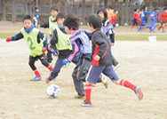
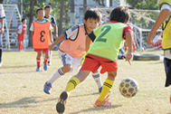
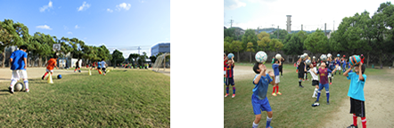

指導方針
ドリブルの上手い選手が各自の判断と創意工夫で連携しパスを交わして自由奔放
に展開する...それがDREAM の目指すサッカーです。
それらが自発的にできる、個性的なテクニックのある選手育成をモットーとしてい
ます。

またDREAMでは、基本的に学年ではなく意識や能力の高い選手は積極的に上のカ
テゴリーでプレーさせます。自分の少し上のレベルでプレーすることはレベルアッ
プには必要不可欠です。また逆に自分より下のレベルでプレーさせてあげることで
自由なアイディアが次々に湧いてくることもあります。ですからDREAMでは、タ
イミングを見て意図して年上や年下のグループに入れたり試合をしたりします。
選手起用やチーム分けについては全てコーチに一任して下さい。

また自分で考え判断できる選手の育成を目指しています。局面での判断や選択は出 来る限り選手に委ねるようにしています。成長過程であることを踏まえ失敗しなが ら、さらにイマジネーション豊かな選手に育つようサポートしていきたいと思いま す。応援の際などには保護者の皆様にも判断に関わる声かけはお控え下さるようお 願いしています。
オフザピッチ(グランド以外の場面)においても自分のことは自分でする様指導して います。練習・試合・合宿等においても集合から解散までを一連のトレーニングと 考えているので、保護者の方々とは別行動を基本としています。
もちろん応援や見学に来ていただくことは、いつでも大歓迎です。選手たちの成長や数々のチャレンジを笑顔で見守っていただきたいと思っています。
トレーニング
リフティングやドリブルを徹底的にトレーニングし個人の育成を目指します。
多くの練習日・場所がありますのでご都合に合わせて参加して下さい。

大切にしていること
これからの学校生活や人生において、どんなにつらいことや苦しいことがあっても、ぐっと前を向いて自分で乗り越えて行けるような強い気持ちを持った人になって欲しいと思います。
彼らの大好きなサッカーを通して、DREAMで伝えたい大切なことです。
その他
●お当番制はありません
保護者の方のお茶当番や送迎等の当番制はしておりません。
練習や試合の見学・応援はご都合の良い時にいつでもお越し下さい。
●現地集合・現地解散
試合は基本的に現地集合・現地解散となります。
会場が遠方の場合は、必要に応じてバスを手配します。
休会・退会について
翌月からの休会･退会については、15日までにお申し出をお願いします。
16日以降のお申し出の場合は、翌々月からの休会･退会になりますのでご注意ください。

中学1年生～3年生が活動しています。>>DREAM U-15のHP
トレセン在籍情報

豊能トレセン 13名

豊能トレセン 15名
DREAMの代表選手として活躍中。
過去の情報
スタッフ情報
DREAM OBの皆様！
スタッフ募集！！
審判・指導・引率等
詳細についてはご連絡下さい。